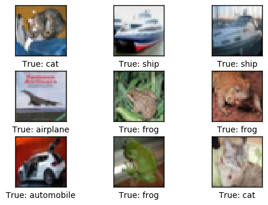
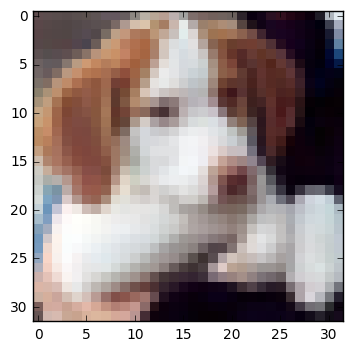
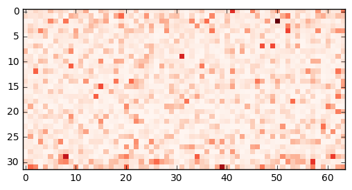
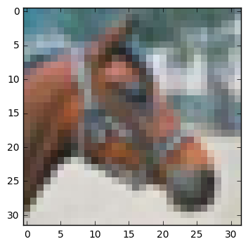
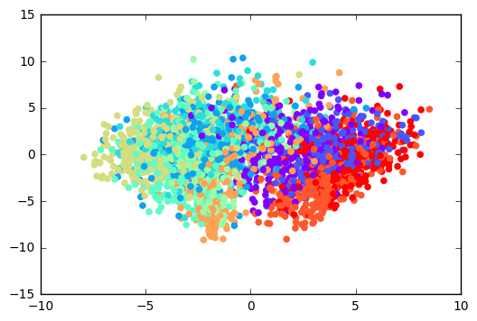
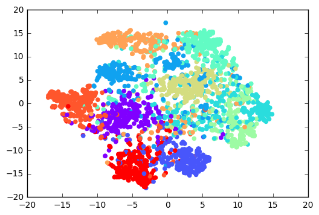
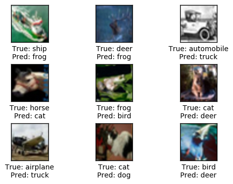

TensorFlow 教程 #08
迁移学习
by Magnus Erik Hvass Pedersen
/ GitHub / Videos on YouTube
中文翻译 thrillerist/Github
简介
在前一篇教程 #07 中，我们了解了如何用预训练的Indeption模型来做图像分类。不幸的是，Inception模型似乎无法对人物图像做分类。原因在于该模型所使用的训练集，其中有一些易混淆的类别标签。
Inception模型实际上能够从图像中提取出有用的信息。因此我们可以用其它数据集来训练Inception模型。但如果要在新的数据集上训练这样的模型，需要在一台强大又昂贵的电脑上花费好几周的时间。
相反，我们可以复用预训练的Inception模型，然后只需要替换掉最后做分类的那一层。这个方法叫迁移学习。
本文基于上一篇教程，你需要熟悉教程#07中的Inception模型，以及之前教程中关于如何在TensorFlow中创建和训练神经网络的部分。 这篇教程的部分代码在inception.py文件中。
流程图
下图展示了用Inception模型做迁移学习时数据的流向。首先，我们在Inception模型中输入并处理一张图像。在模型最终的分类层之前，将所谓的Transfer- Values保存到缓存文件中。
使用缓存文件的原因是，Inception模型处理一张图要花很长时间。我的装有Quad-Core 2 GHz CPU的笔记本电脑每秒能用Inception模型处理3张图像。如果每张图像都要处理多次的话，将transfer-values保存下来可以节省很多时间。
transfer-values有时也称为bottleneck-values，但这个词可能令人费解，在这里就没有使用。
当新数据集里的所有图像都用Inception处理过，并且生成的transfer-values都保存到缓存文件之后，我们可以将这些transfer-values作为其它神经网络的输入。接着训练第二个神经网络，用来分类新的数据集，因此，网络基于Inception模型的transfer-values来学习如何分类图像。
这样，Inception模型从图像中提取出有用的信息，然后用另外的神经网络来做真正的分类工作。
from IPython.display import Image, display
Image('images/08_transfer_learning_flowchart.png')

导入
%matplotlib inline
import matplotlib.pyplot as plt
import tensorflow as tf
import numpy as np
import time
from datetime import timedelta
import os
# Functions and classes for loading and using the Inception model.
import inception
# We use Pretty Tensor to define the new classifier.
import prettytensor as pt
使用Python3.5.2（Anaconda）开发，TensorFlow版本是：
tf.__version__
'0.12.0-rc0'
PrettyTensor 版本:
pt.__version__
'0.7.1'
载入CIFAR-10数据
import cifar10
cirfa10模块中已经定义好了数据维度，因此我们需要时只要导入就行。
from cifar10 import num_classes
设置电脑上保存数据集的路径。
# cifar10.data_path = "data/CIFAR-10/"
CIFAR-10数据集大概有163MB，如果给定路径没有找到文件的话，将会自动下载。
cifar10.maybe_download_and_extract()
Data has apparently already been downloaded and unpacked.
载入类别名称。
class_names = cifar10.load_class_names()
class_names
Loading data: data/CIFAR-10/cifar-10-batches-py/batches.meta
['airplane',
'automobile',
'bird',
'cat',
'deer',
'dog',
'frog',
'horse',
'ship',
'truck']
载入训练集。这个函数返回图像、整形分类号码、以及用One-Hot编码的分类号数组，称为标签。
images_train, cls_train, labels_train = cifar10.load_training_data()
Loading data: data/CIFAR-10/cifar-10-batches-py/data_batch_1
Loading data: data/CIFAR-10/cifar-10-batches-py/data_batch_2
Loading data: data/CIFAR-10/cifar-10-batches-py/data_batch_3
Loading data: data/CIFAR-10/cifar-10-batches-py/data_batch_4
Loading data: data/CIFAR-10/cifar-10-batches-py/data_batch_5
载入测试集。
images_test, cls_test, labels_test = cifar10.load_test_data()
Loading data: data/CIFAR-10/cifar-10-batches-py/test_batch
现在已经载入了CIFAR-10数据集，它包含60,000张图像以及相关的标签（图像的分类）。数据集被分为两个独立的子集，即训练集和测试集。
print("Size of:")
print("- Training-set:\t\t{}".format(len(images_train)))
print("- Test-set:\t\t{}".format(len(images_test)))
Size of:
- Training-set: 50000
- Test-set: 10000
用来绘制图片的帮助函数
这个函数用来在3x3的栅格中画9张图像，然后在每张图像下面写出真实类别和预测类别。
def plot_images(images, cls_true, cls_pred=None, smooth=True):
assert len(images) == len(cls_true)
# Create figure with sub-plots.
fig, axes = plt.subplots(3, 3)
# Adjust vertical spacing.
if cls_pred is None:
hspace = 0.3
else:
hspace = 0.6
fig.subplots_adjust(hspace=hspace, wspace=0.3)
# Interpolation type.
if smooth:
interpolation = 'spline16'
else:
interpolation = 'nearest'
for i, ax in enumerate(axes.flat):
# There may be less than 9 images, ensure it doesn't crash.
if i < len(images):
# Plot image.
ax.imshow(images[i],
interpolation=interpolation)
# Name of the true class.
cls_true_name = class_names[cls_true[i]]
# Show true and predicted classes.
if cls_pred is None:
xlabel = "True: {0}".format(cls_true_name)
else:
# Name of the predicted class.
cls_pred_name = class_names[cls_pred[i]]
xlabel = "True: {0}\nPred: {1}".format(cls_true_name, cls_pred_name)
# Show the classes as the label on the x-axis.
ax.set_xlabel(xlabel)
# Remove ticks from the plot.
ax.set_xticks([])
ax.set_yticks([])
# Ensure the plot is shown correctly with multiple plots
# in a single Notebook cell.
plt.show()
绘制几张图像看看数据是否正确
# Get the first images from the test-set.
images = images_test[0:9]
# Get the true classes for those images.
cls_true = cls_test[0:9]
# Plot the images and labels using our helper-function above.
plot_images(images=images, cls_true=cls_true, smooth=False)

下载Inception模型
从网上下载Inception模型。这是你保存数据文件的默认文件夹。如果文件夹不存在就自动创建。
# inception.data_dir = 'inception/'
如果文件夹中不存在Inception模型，就自动下载。 它有85MB。
更多详情见教程#07。
inception.maybe_download()
Downloading Inception v3 Model ...
Data has apparently already been downloaded and unpacked.
载入Inception模型
载入模型，为图像分类做准备。
注意warning信息，以后可能会导致程序运行失败。
model = inception.Inception()
计算 Transfer-Values
导入用来从Inception模型中获取transfer-values的帮助函数。
from inception import transfer_values_cache
设置训练集和测试集缓存文件的目录。
file_path_cache_train = os.path.join(cifar10.data_path, 'inception_cifar10_train.pkl')
file_path_cache_test = os.path.join(cifar10.data_path, 'inception_cifar10_test.pkl')
print("Processing Inception transfer-values for training-images ...")
# Scale images because Inception needs pixels to be between 0 and 255,
# while the CIFAR-10 functions return pixels between 0.0 and 1.0
images_scaled = images_train * 255.0
# If transfer-values have already been calculated then reload them,
# otherwise calculate them and save them to a cache-file.
transfer_values_train = transfer_values_cache(cache_path=file_path_cache_train,
images=images_scaled,
model=model)
Processing Inception transfer-values for training-images ...
- Data loaded from cache-file: data/CIFAR-10/inception_cifar10_train.pkl
print("Processing Inception transfer-values for test-images ...")
# Scale images because Inception needs pixels to be between 0 and 255,
# while the CIFAR-10 functions return pixels between 0.0 and 1.0
images_scaled = images_test * 255.0
# If transfer-values have already been calculated then reload them,
# otherwise calculate them and save them to a cache-file.
transfer_values_test = transfer_values_cache(cache_path=file_path_cache_test,
images=images_scaled,
model=model)
Processing Inception transfer-values for test-images ...
- Data loaded from cache-file: data/CIFAR-10/inception_cifar10_test.pkl
检查transfer-values的数组大小。在训练集中有50,000张图像，每张图像有2048个transfer-values。
transfer_values_train.shape
(50000, 2048)
相同的，在测试集中有10,000张图像，每张图像有2048个transfer-values。
transfer_values_test.shape
(10000, 2048)
绘制transfer-values的帮助函数
def plot_transfer_values(i):
print("Input image:")
# Plot the i'th image from the test-set.
plt.imshow(images_test[i], interpolation='nearest')
plt.show()
print("Transfer-values for the image using Inception model:")
# Transform the transfer-values into an image.
img = transfer_values_test[i]
img = img.reshape((32, 64))
# Plot the image for the transfer-values.
plt.imshow(img, interpolation='nearest', cmap='Reds')
plt.show()
plot_transfer_values(i=16)
Input image:

Transfer-values for the image using Inception model:

plot_transfer_values(i=17)
Input image:

Transfer-values for the image using Inception model:

transfer-values的PCA分析结果
用scikit-learn里的主成分分析(PCA),将transfer-values的数组维度从2048维降到2维，方便绘制。
from sklearn.decomposition import PCA
创建一个新的PCA-object，将目标数组维度设为2。
pca = PCA(n_components=2)
计算PCA需要一段时间，因此将样本数限制在3000。如果你愿意，可以使用整个训练集。
transfer_values = transfer_values_train[0:3000]
获取你选取的样本的类别号。
cls = cls_train[0:3000]
保数组有3000份样本,每个样本有2048个transfer-values。
transfer_values.shape
(3000, 2048)
用PCA将transfer-value从2048维降低到2维。
transfer_values_reduced = pca.fit_transform(transfer_values)
数组现在有3000个样本，每个样本两个值。
transfer_values_reduced.shape
(3000, 2)
帮助函数用来绘制降维后的transfer-values。
def plot_scatter(values, cls):
# Create a color-map with a different color for each class.
import matplotlib.cm as cm
cmap = cm.rainbow(np.linspace(0.0, 1.0, num_classes))
# Get the color for each sample.
colors = cmap[cls]
# Extract the x- and y-values.
x = values[:, 0]
y = values[:, 1]
# Plot it.
plt.scatter(x, y, color=colors)
plt.show()
画出用PCA降维后的transfer-values。用10种不同的颜色来表示CIFAR-10数据集中不同的类别。颜色各自组合在一起，但有很多重叠部分。这可能是因为PCA无法正确地分离transfer-values。
plot_scatter(transfer_values_reduced, cls)

transfer-values的t-SNE分析结果
from sklearn.manifold import TSNE
另一种降维的方法是t-SNE。不幸的是，t-SNE很慢，因此我们先用PCA将维度从2048减少到50。
pca = PCA(n_components=50)
transfer_values_50d = pca.fit_transform(transfer_values)
创建一个新的t-SNE对象，用来做最后的降维工作，将目标维度设为2维。
tsne = TSNE(n_components=2)
用t-SNE执行最终的降维。目前在scikit-learn中实现的t-SNE可能无法处理很多样本的数据，所以如果你用整个训练集的话，程序可能会崩溃。
transfer_values_reduced = tsne.fit_transform(transfer_values_50d)
确保数组有3000份样本,每个样本有两个transfer-values。
transfer_values_reduced.shape
(3000, 2)
画出用t-SNE降低至二维的transfer-values，相比上面PCA的结果，它有更好的分离度。
这意味着由Inception模型得到的transfer-values似乎包含了足够多的信息，可以对CIFAR-10图像进行分类，然而还是有一些重叠部分，说明分离并不完美。
plot_scatter(transfer_values_reduced, cls)

TensorFlow中的新分类器
在我们将会在TensorFlow中创建一个新的神经网络。这个网络会把Inception模型中的transfer-values作为输入，然后输出CIFAR-10图像的预测类别。
这里假定你已经熟悉如何在TensorFlow中建立神经网络，否则请阅读教程#03。
占位符 （Placeholder）变量
首先需要找到transfer-values的数组长度，它是保存在Inception模型对象中的一个变量。
transfer_len = model.transfer_len
现在为输入的transfer-values创建一个placeholder变量，输入到我们新建的网络中。变量的形状是[None, transfer_len]，None表示它的输入数组包含任意数量的样本，每个样本元素个数为2048，即transfer_len。
x = tf.placeholder(tf.float32, shape=[None, transfer_len], name='x')
为输入图像的真实类型标签定义另外一个placeholder变量。这是One-Hot编码的数组，包含10个元素，每个元素代表了数据集中的一种可能类别。
y_true = tf.placeholder(tf.float32, shape=[None, num_classes], name='y_true')
计算代表真实类别的整形数字。这也可能是一个placeholder变量。
y_true_cls = tf.argmax(y_true, dimension=1)
神经网络
创建在CIFAR-10数据集上做分类的神经网络。它将Inception模型得到的transfer-values作为输入，保存在placeholder变量x中。网络输出预测的类别y_pred。
教程#03中有更多使用Pretty Tensor构造神经网络的细节。
# Wrap the transfer-values as a Pretty Tensor object.
x_pretty = pt.wrap(x)
with pt.defaults_scope(activation_fn=tf.nn.relu):
y_pred, loss = x_pretty.\
fully_connected(size=1024, name='layer_fc1').\
softmax_classifier(num_classes=num_classes, labels=y_true)
优化方法
创建一个变量来记录当前优化迭代的次数。
global_step = tf.Variable(initial_value=0,
name='global_step', trainable=False)
优化新的神经网络的方法。
optimizer = tf.train.AdamOptimizer(learning_rate=1e-4).minimize(loss, global_step)
分类准确率
网络的输出y_pred是一个包含10个元素的数组。类别号是数组中最大元素的索引。
y_pred_cls = tf.argmax(y_pred, dimension=1)
创建一个布尔向量，表示每张图像的真实类别是否与预测类别相同。
correct_prediction = tf.equal(y_pred_cls, y_true_cls)
将布尔值向量类型转换成浮点型向量，这样子False就变成0，True变成1，然后计算这些值的平均数，以此来计算分类的准确度。
accuracy = tf.reduce_mean(tf.cast(correct_prediction, tf.float32))
运行TensorFlow
创建TensorFlow会话（session）
一旦创建了TensorFlow图，我们需要创建一个TensorFlow会话，用来运行图。
session = tf.Session()
初始化变量
我们需要在开始优化weights和biases变量之前对它们进行初始化。
session.run(tf.global_variables_initializer())
获取随机训练batch的帮助函数
训练集中有50,000张图像（以及保存transfer-values的数组）。用这些图像（transfer-vlues）计算模型的梯度会花很多时间。因此，我们在优化器的每次迭代里只用到了一小部分的图像（transfer-vlues）。
如果内存耗尽导致电脑死机或变得很慢，你应该试着减少这些数量，但同时可能还需要更优化的迭代。
train_batch_size = 64
函数用来从训练集中选择随机batch的transfer-vlues。
def random_batch():
# Number of images (transfer-values) in the training-set.
num_images = len(transfer_values_train)
# Create a random index.
idx = np.random.choice(num_images,
size=train_batch_size,
replace=False)
# Use the random index to select random x and y-values.
# We use the transfer-values instead of images as x-values.
x_batch = transfer_values_train[idx]
y_batch = labels_train[idx]
return x_batch, y_batch
执行优化迭代的帮助函数
函数用来执行一定数量的优化迭代，以此来逐渐改善网络层的变量。在每次迭代中，会从训练集中选择新的一批数据，然后TensorFlow在这些训练样本上执行优化。每100次迭代会打印出进度。
def optimize(num_iterations):
# Start-time used for printing time-usage below.
start_time = time.time()
for i in range(num_iterations):
# Get a batch of training examples.
# x_batch now holds a batch of images (transfer-values) and
# y_true_batch are the true labels for those images.
x_batch, y_true_batch = random_batch()
# Put the batch into a dict with the proper names
# for placeholder variables in the TensorFlow graph.
feed_dict_train = {x: x_batch,
y_true: y_true_batch}
# Run the optimizer using this batch of training data.
# TensorFlow assigns the variables in feed_dict_train
# to the placeholder variables and then runs the optimizer.
# We also want to retrieve the global_step counter.
i_global, _ = session.run([global_step, optimizer],
feed_dict=feed_dict_train)
# Print status to screen every 100 iterations (and last).
if (i_global % 100 == 0) or (i == num_iterations - 1):
# Calculate the accuracy on the training-batch.
batch_acc = session.run(accuracy,
feed_dict=feed_dict_train)
# Print status.
msg = "Global Step: {0:>6}, Training Batch Accuracy: {1:>6.1%}"
print(msg.format(i_global, batch_acc))
# Ending time.
end_time = time.time()
# Difference between start and end-times.
time_dif = end_time - start_time
# Print the time-usage.
print("Time usage: " + str(timedelta(seconds=int(round(time_dif)))))
展示结果的帮助函数
绘制错误样本的帮助函数
函数用来绘制测试集中被误分类的样本。
def plot_example_errors(cls_pred, correct):
# This function is called from print_test_accuracy() below.
# cls_pred is an array of the predicted class-number for
# all images in the test-set.
# correct is a boolean array whether the predicted class
# is equal to the true class for each image in the test-set.
# Negate the boolean array.
incorrect = (correct == False)
# Get the images from the test-set that have been
# incorrectly classified.
images = images_test[incorrect]
# Get the predicted classes for those images.
cls_pred = cls_pred[incorrect]
# Get the true classes for those images.
cls_true = cls_test[incorrect]
n = min(9, len(images))
# Plot the first n images.
plot_images(images=images[0:n],
cls_true=cls_true[0:n],
cls_pred=cls_pred[0:n])
绘制混淆（confusion）矩阵的帮助函数
# Import a function from sklearn to calculate the confusion-matrix.
from sklearn.metrics import confusion_matrix
def plot_confusion_matrix(cls_pred):
# This is called from print_test_accuracy() below.
# cls_pred is an array of the predicted class-number for
# all images in the test-set.
# Get the confusion matrix using sklearn.
cm = confusion_matrix(y_true=cls_test, # True class for test-set.
y_pred=cls_pred) # Predicted class.
# Print the confusion matrix as text.
for i in range(num_classes):
# Append the class-name to each line.
class_name = "({}) {}".format(i, class_names[i])
print(cm[i, :], class_name)
# Print the class-numbers for easy reference.
class_numbers = [" ({0})".format(i) for i in range(num_classes)]
print("".join(class_numbers))
计算分类的帮助函数
这个函数用来计算图像的预测类别，同时返回一个代表每张图像分类是否正确的布尔数组。
由于计算可能会耗费太多内存，就分批处理。如果你的电脑死机了，试着降低batch-size。
# Split the data-set in batches of this size to limit RAM usage.
batch_size = 256
def predict_cls(transfer_values, labels, cls_true):
# Number of images.
num_images = len(transfer_values)
# Allocate an array for the predicted classes which
# will be calculated in batches and filled into this array.
cls_pred = np.zeros(shape=num_images, dtype=np.int)
# Now calculate the predicted classes for the batches.
# We will just iterate through all the batches.
# There might be a more clever and Pythonic way of doing this.
# The starting index for the next batch is denoted i.
i = 0
while i < num_images:
# The ending index for the next batch is denoted j.
j = min(i + batch_size, num_images)
# Create a feed-dict with the images and labels
# between index i and j.
feed_dict = {x: transfer_values[i:j],
y_true: labels[i:j]}
# Calculate the predicted class using TensorFlow.
cls_pred[i:j] = session.run(y_pred_cls, feed_dict=feed_dict)
# Set the start-index for the next batch to the
# end-index of the current batch.
i = j
# Create a boolean array whether each image is correctly classified.
correct = (cls_true == cls_pred)
return correct, cls_pred
计算测试集上的预测类别。
def predict_cls_test():
return predict_cls(transfer_values = transfer_values_test,
labels = labels_test,
cls_true = cls_test)
计算分类准确率的帮助函数
这个函数计算了给定布尔数组的分类准确率，布尔数组表示每张图像是否被正确分类。比如， cls_accuracy([True, True, False, False, False]) = 2/5 = 0.4。
def classification_accuracy(correct):
# When averaging a boolean array, False means 0 and True means 1.
# So we are calculating: number of True / len(correct) which is
# the same as the classification accuracy.
# Return the classification accuracy
# and the number of correct classifications.
return correct.mean(), correct.sum()
展示分类准确率的帮助函数
函数用来打印测试集上的分类准确率。
为测试集上的所有图片计算分类会花费一段时间，因此我们直接从这个函数里调用上面的函数，这样就不用每个函数都重新计算分类。
def print_test_accuracy(show_example_errors=False,
show_confusion_matrix=False):
# For all the images in the test-set,
# calculate the predicted classes and whether they are correct.
correct, cls_pred = predict_cls_test()
# Classification accuracy and the number of correct classifications.
acc, num_correct = classification_accuracy(correct)
# Number of images being classified.
num_images = len(correct)
# Print the accuracy.
msg = "Accuracy on Test-Set: {0:.1%} ({1} / {2})"
print(msg.format(acc, num_correct, num_images))
# Plot some examples of mis-classifications, if desired.
if show_example_errors:
print("Example errors:")
plot_example_errors(cls_pred=cls_pred, correct=correct)
# Plot the confusion matrix, if desired.
if show_confusion_matrix:
print("Confusion Matrix:")
plot_confusion_matrix(cls_pred=cls_pred)
结果
优化之前的性能
测试集上的准确度很低，这是由于模型只做了初始化，并没做任何优化，所以它只是对图像做随机分类。
print_test_accuracy(show_example_errors=False,
show_confusion_matrix=False)
Accuracy on Test-Set: 9.4% (939 / 10000)
10,000次优化迭代后的性能
在10,000次优化迭代之后，测试集上的分类准确率大约为90%。相比之下，之前教程#06中的准确率低于80%。
optimize(num_iterations=10000)
Global Step: 100, Training Batch Accuracy: 82.8%
Global Step: 200, Training Batch Accuracy: 90.6%
Global Step: 300, Training Batch Accuracy: 90.6%
Global Step: 400, Training Batch Accuracy: 95.3%
Global Step: 500, Training Batch Accuracy: 85.9%
Global Step: 600, Training Batch Accuracy: 84.4%
Global Step: 700, Training Batch Accuracy: 90.6%
Global Step: 800, Training Batch Accuracy: 93.8%
Global Step: 900, Training Batch Accuracy: 92.2%
Global Step: 1000, Training Batch Accuracy: 95.3%
Global Step: 1100, Training Batch Accuracy: 93.8%
Global Step: 1200, Training Batch Accuracy: 90.6%
Global Step: 1300, Training Batch Accuracy: 95.3%
Global Step: 1400, Training Batch Accuracy: 90.6%
Global Step: 1500, Training Batch Accuracy: 90.6%
Global Step: 1600, Training Batch Accuracy: 92.2%
Global Step: 1700, Training Batch Accuracy: 90.6%
Global Step: 1800, Training Batch Accuracy: 92.2%
Global Step: 1900, Training Batch Accuracy: 84.4%
Global Step: 2000, Training Batch Accuracy: 85.9%
Global Step: 2100, Training Batch Accuracy: 87.5%
Global Step: 2200, Training Batch Accuracy: 90.6%
Global Step: 2300, Training Batch Accuracy: 92.2%
Global Step: 2400, Training Batch Accuracy: 95.3%
Global Step: 2500, Training Batch Accuracy: 89.1%
Global Step: 2600, Training Batch Accuracy: 93.8%
Global Step: 2700, Training Batch Accuracy: 87.5%
Global Step: 2800, Training Batch Accuracy: 90.6%
Global Step: 2900, Training Batch Accuracy: 92.2%
Global Step: 3000, Training Batch Accuracy: 96.9%
Global Step: 3100, Training Batch Accuracy: 96.9%
Global Step: 3200, Training Batch Accuracy: 92.2%
Global Step: 3300, Training Batch Accuracy: 95.3%
Global Step: 3400, Training Batch Accuracy: 93.8%
Global Step: 3500, Training Batch Accuracy: 89.1%
Global Step: 3600, Training Batch Accuracy: 89.1%
Global Step: 3700, Training Batch Accuracy: 95.3%
Global Step: 3800, Training Batch Accuracy: 98.4%
Global Step: 3900, Training Batch Accuracy: 89.1%
Global Step: 4000, Training Batch Accuracy: 92.2%
Global Step: 4100, Training Batch Accuracy: 96.9%
Global Step: 4200, Training Batch Accuracy: 100.0%
Global Step: 4300, Training Batch Accuracy: 100.0%
Global Step: 4400, Training Batch Accuracy: 90.6%
Global Step: 4500, Training Batch Accuracy: 95.3%
Global Step: 4600, Training Batch Accuracy: 96.9%
Global Step: 4700, Training Batch Accuracy: 96.9%
Global Step: 4800, Training Batch Accuracy: 96.9%
Global Step: 4900, Training Batch Accuracy: 92.2%
Global Step: 5000, Training Batch Accuracy: 98.4%
Global Step: 5100, Training Batch Accuracy: 93.8%
Global Step: 5200, Training Batch Accuracy: 92.2%
Global Step: 5300, Training Batch Accuracy: 98.4%
Global Step: 5400, Training Batch Accuracy: 98.4%
Global Step: 5500, Training Batch Accuracy: 100.0%
Global Step: 5600, Training Batch Accuracy: 92.2%
Global Step: 5700, Training Batch Accuracy: 98.4%
Global Step: 5800, Training Batch Accuracy: 92.2%
Global Step: 5900, Training Batch Accuracy: 92.2%
Global Step: 6000, Training Batch Accuracy: 93.8%
Global Step: 6100, Training Batch Accuracy: 95.3%
Global Step: 6200, Training Batch Accuracy: 98.4%
Global Step: 6300, Training Batch Accuracy: 98.4%
Global Step: 6400, Training Batch Accuracy: 96.9%
Global Step: 6500, Training Batch Accuracy: 95.3%
Global Step: 6600, Training Batch Accuracy: 96.9%
Global Step: 6700, Training Batch Accuracy: 96.9%
Global Step: 6800, Training Batch Accuracy: 92.2%
Global Step: 6900, Training Batch Accuracy: 96.9%
Global Step: 7000, Training Batch Accuracy: 100.0%
Global Step: 7100, Training Batch Accuracy: 95.3%
Global Step: 7200, Training Batch Accuracy: 96.9%
Global Step: 7300, Training Batch Accuracy: 96.9%
Global Step: 7400, Training Batch Accuracy: 95.3%
Global Step: 7500, Training Batch Accuracy: 95.3%
Global Step: 7600, Training Batch Accuracy: 93.8%
Global Step: 7700, Training Batch Accuracy: 93.8%
Global Step: 7800, Training Batch Accuracy: 95.3%
Global Step: 7900, Training Batch Accuracy: 95.3%
Global Step: 8000, Training Batch Accuracy: 93.8%
Global Step: 8100, Training Batch Accuracy: 95.3%
Global Step: 8200, Training Batch Accuracy: 98.4%
Global Step: 8300, Training Batch Accuracy: 93.8%
Global Step: 8400, Training Batch Accuracy: 98.4%
Global Step: 8500, Training Batch Accuracy: 96.9%
Global Step: 8600, Training Batch Accuracy: 96.9%
Global Step: 8700, Training Batch Accuracy: 98.4%
Global Step: 8800, Training Batch Accuracy: 95.3%
Global Step: 8900, Training Batch Accuracy: 98.4%
Global Step: 9000, Training Batch Accuracy: 98.4%
Global Step: 9100, Training Batch Accuracy: 98.4%
Global Step: 9200, Training Batch Accuracy: 96.9%
Global Step: 9300, Training Batch Accuracy: 100.0%
Global Step: 9400, Training Batch Accuracy: 90.6%
Global Step: 9500, Training Batch Accuracy: 92.2%
Global Step: 9600, Training Batch Accuracy: 98.4%
Global Step: 9700, Training Batch Accuracy: 96.9%
Global Step: 9800, Training Batch Accuracy: 98.4%
Global Step: 9900, Training Batch Accuracy: 98.4%
Global Step: 10000, Training Batch Accuracy: 100.0%
Time usage: 0:00:32
print_test_accuracy(show_example_errors=True,
show_confusion_matrix=True)
Accuracy on Test-Set: 90.7% (9069 / 10000)
Example errors:

Confusion Matrix:
[926 6 13 2 3 0 1 1 29 19] (0) airplane
[ 9 921 2 5 0 1 1 1 2 58] (1) automobile
[ 18 1 883 31 32 4 22 5 1 3] (2) bird
[ 7 2 19 855 23 57 24 9 2 2] (3) cat
[ 5 0 21 25 896 4 24 22 2 1] (4) deer
[ 2 0 12 97 18 843 10 15 1 2] (5) dog
[ 2 1 16 17 17 4 940 1 2 0] (6) frog
[ 8 0 10 19 28 14 1 914 2 4] (7) horse
[ 42 6 1 4 1 0 2 0 932 12] (8) ship
[ 6 19 2 2 1 0 1 1 9 959] (9) truck
(0) (1) (2) (3) (4) (5) (6) (7) (8) (9)
关闭TensorFlow会话
现在我们已经用TensorFlow完成了任务，关闭session，释放资源。注意，我们需要关闭两个TensorFlow-session，每个模型对象各有一个。
# This has been commented out in case you want to modify and experiment
# with the Notebook without having to restart it.
# model.close()
# session.close()
总结
之前的教程 #06 中，我们在一台笔记本电脑上花了15个小时来训练一个神经网络，用来对CIFAR-10数据集做分类，它在测试集上的准确率大约80%。
在这篇教程中，我们使用教程 #07 中的Inception模型，来获取在CIFAR-10数据集上大概90%的分类准确率。我们将所有CIFAR-10数据集中的图像输入到Inception模型中，然后在最终分类层之前获取transfer-values。接着创建另外一个神经网络，它将transfer-values作为输入，生成一个CIFAR-10类别作为输出。
CIFAR-10数据集包含60,000张图像。在一台没有GPU的电脑上，大约花了6个小时来计算Inception模型对这些图像的transfer-values。在这些transfer-values上训练一个新的分类器只需几分钟。两部分时间加起来，这种迁移学习比直接为CIFRA-10数据集训练一个神经网络要快一倍以上，并且它能得到更高的分类准确率。
因此，用Inception模型做迁移学习，对于在自己的数据集上建立一个图像分类器是很有帮助的。
练习
下面使一些可能会让你提升TensorFlow技能的一些建议练习。为了学习如何更合适地使用TensorFlow，实践经验是很重要的。
在你对这个Notebook进行修改之前，可能需要先备份一下。
试着在PCA和t-SNE中使用整个训练集。会出现什么情况？
试着为新的分类器改变神经网络。如果你删掉全连接层或添加更多的全连接层会发生什么？
如果你执行更多或更少的迭代会出现什么情况？
如果你改变优化器的
learning_rate会发生什么？如果你像在教程#06中的那样，对CIFAR-10图像进行扭曲呢？你将不能使用缓存，因为每张图都不同。
试着用MNIST数据集来代替CIFAR-10数据集。
向朋友解释程序如何工作。
License (MIT)
Copyright (c) 2016 by Magnus Erik Hvass Pedersen
Permission is hereby granted, free of charge, to any person obtaining a copy of this software and associated documentation files (the "Software"), to deal in the Software without restriction, including without limitation the rights to use, copy, modify, merge, publish, distribute, sublicense, and/or sell copies of the Software, and to permit persons to whom the Software is furnished to do so, subject to the following conditions:
The above copyright notice and this permission notice shall be included in all copies or substantial portions of the Software.
THE SOFTWARE IS PROVIDED "AS IS", WITHOUT WARRANTY OF ANY KIND, EXPRESS OR IMPLIED, INCLUDING BUT NOT LIMITED TO THE WARRANTIES OF MERCHANTABILITY, FITNESS FOR A PARTICULAR PURPOSE AND NONINFRINGEMENT. IN NO EVENT SHALL THE AUTHORS OR COPYRIGHT HOLDERS BE LIABLE FOR ANY CLAIM, DAMAGES OR OTHER LIABILITY, WHETHER IN AN ACTION OF CONTRACT, TORT OR OTHERWISE, ARISING FROM, OUT OF OR IN CONNECTION WITH THE SOFTWARE OR THE USE OR OTHER DEALINGS IN THE SOFTWARE.